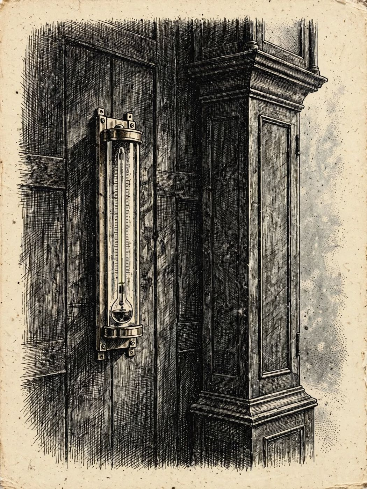

6 de diciembre
La hora exacta de la muerte
Libro · págs. 26-29
Audio del día
Transcripción
«Veintiocho coma ocho grados centígrados a las siete y media de la mañana. Ese es el número que dejó el termómetro en el cuerpo. El frío de la montaña no perdona y el cuerpo humano pierde calor a un ritmo constante en una habitación a catorce grados. El margen entre el enfriamiento lento y el rápido dibuja una ventana en la noche. Haz los números... Necesitamos saber qué sospechosos estaban despiertos en esas horas clave.»

Intenta resolverlo primero. Abre solo lo que necesites, en este orden.
1Pista sutil
El cuerpo perdió en total 8,2 °C (37,0 − 28,8). Divide 8,2 entre el ritmo lento (0,85) para saber las horas máximas transcurridas y entre el ritmo rápido (0,95) para las horas mínimas. Convierte los decimales a minutos multiplicando por 60.
2Comprobación parcial
Con el ritmo lento pasaron aprox. 9 horas y 39 minutos. Restando esto de las 07:30, obtienes las 21:51 (que al redondear hacia abajo da las 21:50).
3Pista fuerte
8,2 ÷ 0,85 ≈ 9,647 horas y 8,2 ÷ 0,95 ≈ 8,632 horas. Convierte los decimales: 0,647 × 60 ≈ 39 minutos (9 h 39 min) y 0,632 × 60 ≈ 38 minutos (8 h 38 min). Réstalos de las 07:30.
4Solución oficialSpoiler si no lo has intentado
Cálculos:
Ritmo lento (0,85 °C/h): 9 h 39 min → Muerte más temprana: 21:51 (redondeado a 21:50 del 30 de nov.).
Ritmo rápido (0,95 °C/h): 8 h 38 min → Muerte más tardía: 22:52 (redondeado a 22:55 del 30 de nov.).
Ventana de muerte: De 21:50 a 22:55.
Para el desenlace de la historia, vuelve al libro: la sección de soluciones está al final.